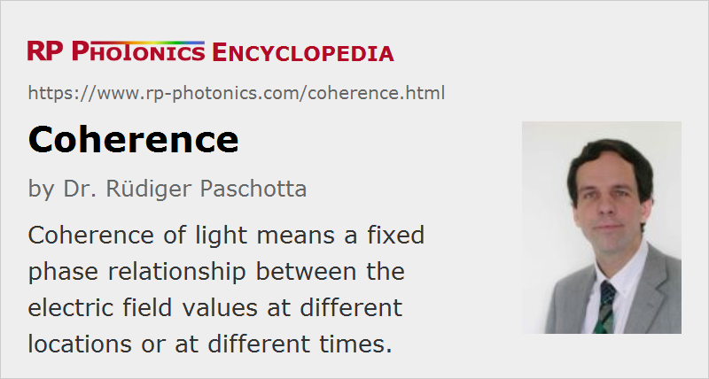

Coherence
Definition: a fixed phase relationship between the electric field values at different locations or at different times
More specific terms: phase coherence, temporal coherence, spatial coherence
German: Kohärenz
How to cite the article; suggest additional literature
Author: Dr. Rüdiger Paschotta
Coherence is one of the most important concepts in optics and is strongly related to the ability of light to exhibit interference effects. A light field is called coherent when there is a fixed phase relationship between the electric field values at different locations or at different times. Partial coherence means that there is some (although not perfect) correlation between phase values. There are various ways of quantifying the degree of coherence, as described below.
It is also common to call certain processes or techniques coherent or incoherent. In that case, “coherent” essentially means phase-sensitive. For example, the general method of coherent beam combining relies on the mutual coherence of beams, whereas spectral (incoherent) beam combining does not
Spatial Versus Temporal Coherence
There are two very different aspects of coherence:
- Spatial coherence means a strong correlation (fixed phase relationship) between the electric fields at different locations across the beam profile. For example, within a cross-section of a beam from a laser with diffraction-limited beam quality, the electric fields at different positions oscillate in a totally correlated way, even if the temporal structure is complicated by a superposition of different frequency components. Spatial coherence is the essential prerequisite of the strong directionality of laser beams.
- Temporal coherence means a strong correlation between the electric fields at one location but different times. For example, the output of a single-frequency laser can exhibit a very high temporal coherence, as the electric field temporally evolves in a highly predictable fashion: it exhibits a clean sinusoidal oscillation over extended periods of time.
Lasers have the potential for generating beams (e.g. Gaussian beams) with very high spatial coherence, and this is perhaps the most fundamental difference between laser light and radiation from other light sources. High spatial coherence arises from the existence of resonator modes, which define spatially correlated field patterns. In situations where only a single resonator mode has sufficient laser gain to oscillate, a single longitudinal mode can be selected, obtaining single-frequency operation with very high temporal coherence as well.
Figures 2–4 further illustrate the difference between spatial and temporal coherence. For reference, Figure 2 shows a monochromatic Gaussian beam, exhibiting perfect spatial and temporal coherence.

Figure 3 shows a beam with high spatial coherence, but poor temporal coherence. The wavefronts are formed as above, and the beam quality is still very high, but the amplitude and phase of the beam varies along the propagation direction. Note that both the local amplitude and the spacing of the wavefronts vary to some extent. Such a beam can be generated e.g. from the output of a supercontinuum source.
Figure 4 shows a laser beam with reduced spatial coherence, but high temporal coherence. The wavefronts are deformed, and this results in a high beam divergence and poor beam quality. On the other hand, the beam is monochromatic, so that the spacing of the deformed wavefronts remains constant. Such a beam can result from a single-frequency laser, when its output is sent through some optically inhomogeneous material.

If a laser beam with high spatial coherence is sent through an optical diffuser element (for example, a very inhomogeneous piece of glass) which totally scrambles the wavefront, the resulting distorted beam could in principle still be considered as spatially coherent, since the phase relationship between the electric fields at different points would still be fixed, as long as the wavefront distortions do not change with time. It would then also in principle be possible to restore a simple beam shape by applying another optical element which compensates the complicated spatial distortions. For most practical purposes, however, such a distorted beam will be spatially incoherent. Nevertheless, a real destruction of spatial coherence requires time-dependent wavefront distortions, as can be obtained with a rotating diffuser, for example. In that case, the temporal coherence is also somewhat degraded.
Quantifying Coherence
There are different ways to quantify the degree of coherence:
- Correlation functions specify the degree of correlation as a function of a spatial or temporal distance. There are correlation functions of different orders. The first-order correlation function is related to the optical spectrum. The second-order correlation function describes intensity correlations, i.e., effects like photon bunching or anti-bunching. Higher-order functions describe still more subtle details.
- The coherence time quantifies the degree of first-order temporal coherence via the time over which coherence is lost.
- The coherence length is the coherence time times the vacuum velocity of light, and thus also characterizes the temporal (not spatial!) coherence via the propagation length (and thus propagation time) over which coherence is lost.
- The linewidth of a single-frequency laser is also strongly related to temporal coherence: a narrow linewidth (high monochromaticity) means high temporal coherence.
- Fringe visibility parameters essentially specify the visibility (contrast) of an interference pattern generated by superposition of two electric fields.
The relationship between optical bandwidth and temporal coherence can be non-trivial. For example, a pulse train from a mode-locked laser can have a broad overall bandwidth, with the Fourier spectrum consisting of discrete very narrow lines (→ frequency combs). The temporal coherence can be very high in the sense that there are strong field correlations for large time delays which are close to integer multiples of the pulse period. (See also the discussion on the coherence of supercontinua, and the article concerning coherence of ultrashort pulses in the Photonics Spotlight.)
Importance of Coherence in Applications
Some applications need light with very high spatial and temporal coherence. This applies, e.g., to many variations of interferometry, holography, and some types of optical sensors (e.g. fiber-optic sensors). Such features are also important for the technique of coherent beam combining.
For other applications, the coherence of the light used should be as low as possible. For example, very low temporal coherence (but combined with high spatial coherence) is required for optical coherence tomography, where images are created with a kind of interferometry, and a high spatial resolution requires low temporal coherence. Suitable light sources for such applications can be based on amplified spontaneous emission (ASE) from a laser amplifier (→ superluminescent sources) or on supercontinuum generation in nonlinear media. A low degree of temporal coherence can also be beneficial for laser projection displays, imaging and pointer applications, as it reduces the tendency for laser speckle and similar interference effects.
Coherence in Quantum Optics
In quantum optics, the term coherence is often used for the state of light-emitting atoms or ions. In that case, coherence refers to a phase relationship between the complex amplitudes corresponding to electronic states. This is important, e.g., in the context of lasing without inversion. There is also the term “coherent states” of the light field, which has yet another meaning.
Suppliers
The RP Photonics Buyer's Guide contains 2 suppliers for coherence measurement devices. Among them:
Questions and Comments from Users
Here you can submit questions and comments. As far as they get accepted by the author, they will appear above this paragraph together with the author’s answer. The author will decide on acceptance based on certain criteria. Essentially, the issue must be of sufficiently broad interest.
Please do not enter personal data here; we would otherwise delete it soon. (See also our privacy declaration.) If you wish to receive personal feedback or consultancy from the author, please contact him e.g. via e-mail.
By submitting the information, you give your consent to the potential publication of your inputs on our website according to our rules. (If you later retract your consent, we will delete those inputs.) As your inputs are first reviewed by the author, they may be published with some delay.
See also: coherence time, coherence length, monochromatic light, optical phase, laser beams, beam quality, linewidth, interference, laser speckle, diffusers, supercontinuum generation, coherent beam combining, The Photonics Spotlight 2006-09-22, The Photonics Spotlight 2008-04-22, The Photonics Spotlight 2009-06-23
and other articles in the category general optics
|  |
If you like this page, please share the link with your friends and colleagues, e.g. via social media:
These sharing buttons are implemented in a privacy-friendly way!